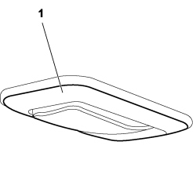
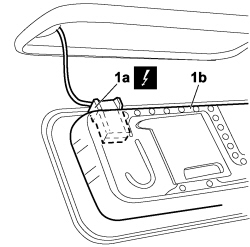

7040E12 CENTRE COURTESY LIGHT - R+R
- Path
- Procedures > 70 FITTINGS > 7040 BODYSHELL INTERIOR TRIMS AND FITTINGS > 7040E interior courtesy light system > 7040E12 CENTRE COURTESY LIGHT - R+R
- Kind
- repair procedure (removal / refitting; the operation number is the code)
- Applies to
- engines: 1.4 8v, 1.6 16v, 1.3 JTD 16V, 1.9 JTD 8V; all production periods
- Interactive page
- https://sloeber94.github.io/elrnDB-fDbl/en/#/223000194
Applies to: engines: 1.4 8v, 1.6 16v, 1.3 JTD 16V, 1.9 JTD 8V; production: da 12/03; only with equipment: MY 2005
 Removing
Removing
 Refitting
RefittingTurn the ignition key to the OFF position.
Lift the bonnet
Disconnect the negative battery terminal.
Description | Connector | |
|---|---|---|
- | BATTERY |
1. Release the central courtesy light from its housing.

Applies to: engines: 1.4 8v, 1.6 16v, 1.3 JTD 16V, 1.9 JTD 8V; production: da 12/03; only with equipment: MY 2005
1. Disconnect the electrical connection (1a) from the courtesy light (1b) and remove the courtesy light from the vehicle.
Description | Connector | |
|---|---|---|
1a | CENTRE REAR COURTESY LIGHT |

Applies to: engines: 1.4 8v, 1.6 16v, 1.3 JTD 16V, 1.9 JTD 8V; production: da 12/03; only with equipment: MY 2005
Refitting
RemovingCheck that the central courtesy light is not damaged.
Connect the electrical connection to the courtesy light.
Description | Connector | |
|---|---|---|
- | CENTRE REAR COURTESY LIGHT |
Fit the central courtesy light in its housing.
Connect the negative battery terminal.
Description | Connector | |
|---|---|---|
- | BATTERY |
Check that the central courtesy light is working properly.